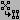

Base Window
The base window is the central place where graphs are visualized. uDraw(Graph) is a multi-graph and multi-view environment, so in one base window you can open a new view of the current graph (i.e. another base window) by using menu View/Open New View. When two or more base windows are open at a time, you can close one of them with menu File/Close without terminating the system. To exit from any base window, select menu File/Exit.

After loading a graph from file, it will be displayed in the graph area of the base window. If the graph exceeds the size of the window, the horizontal and vertical scrollbar can be used to adjust the currently visible area (2D-scrolling is possible by dragging with the middle mouse button, if available). In the footer area, system messages are displayed, e.g. the status of an operation.
The pull down menus are used to start operations in uDraw(Graph). Menus can be selected either with the mouse or triggered by using the keyboard. The following menus are available in uDraw(Graph):
The icon bar at the left side of each base window contains icons (buttons) for direct access to some frequently used operations. uDraw(Graph) offers the following icons:
- File/Open...
-
 File/Save As...
File/Save As...
- File/Print...
- View/Scale...
-  Layout/Improve All
- Options/Layout Algorithm.../Preserve Node Order
- Options/Layout Algorithm.../Modify Node Order
-
 Options/Layout Algorithm.../Fixed Neighbour Nodes
Options/Layout Algorithm.../Fixed Neighbour Nodes
Beside these icons, the icon bar may have a second plane if an external application program (for example the graph editor) is connected with the API. A uDraw(Graph) application is able to add its own icons to the icon bar. Of course, these icons are specific to the particular application and cannot be described here. Application icons are shown on a second plane of the icon bar. The user can switch between the regular plane (with the icons shown above) and the application plane by selecting the small arrows at the lower side of the icon bar.